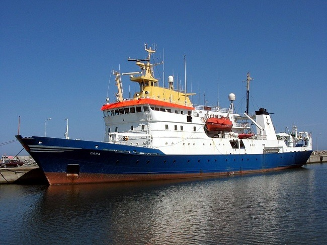

Here's what I have done
Florida Institute of Technology, Melbourne, FL
Graduate student (Sep 2017 – Dec 2018)
Kaggle Data Science Bowl Competition
- Collaborated with 3 other students under the supervision of Dr. Debasis Mitra
- Performed data augmentation and organization to increase time and accuracy of training
- Used CNNs to train the network to spot nuclei under various conditions
- Ranked 196th for the first submission of the competition
Research and analyze the Longest Common Subsequence algorithm
- Read and analyzed the time complexity of the Longest Common Subsequence algorithm
- Wrote code to test the algorithm in Java, wrote and submitted a report to the professor
Fingerprint Verification
- Developed an Windows application for fingerprint verification, employed a SDK from U.Are.U
- Tested on various parameters and database

DOU Networks Company, Ho Chi Minh, Vietnam
Software Engineer (Mar 2016 - Dec 2016)
- Worked with a team for a Vessel management project
- Analyzed business logic, data model and explained to other team members
- Tested and managed the progress of a main modules
- Compiled C# scripts to run the business logic as well as designed the UI with WPF
- Reviewed, performed logical and unit tests and submitted code versions to version control
Ryomo Vietnam Solutions Company, Ho Chi Minh, Vietnam
Software Engineer (Jun 2014 - Feb 2016)
- Developed software modules for Gas and Electricity companies in Japan using C# and WPF
- Debugged, unit tested and designed reports
- Communicated with collaborators in Japan about issues in specification documents
- Reported to team leaders and project managers in Japanese